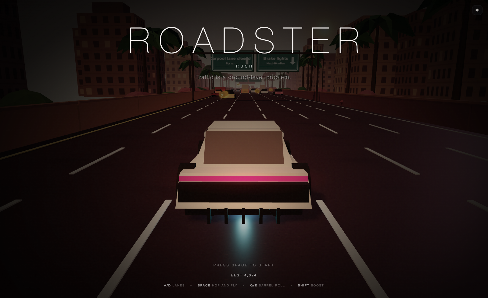
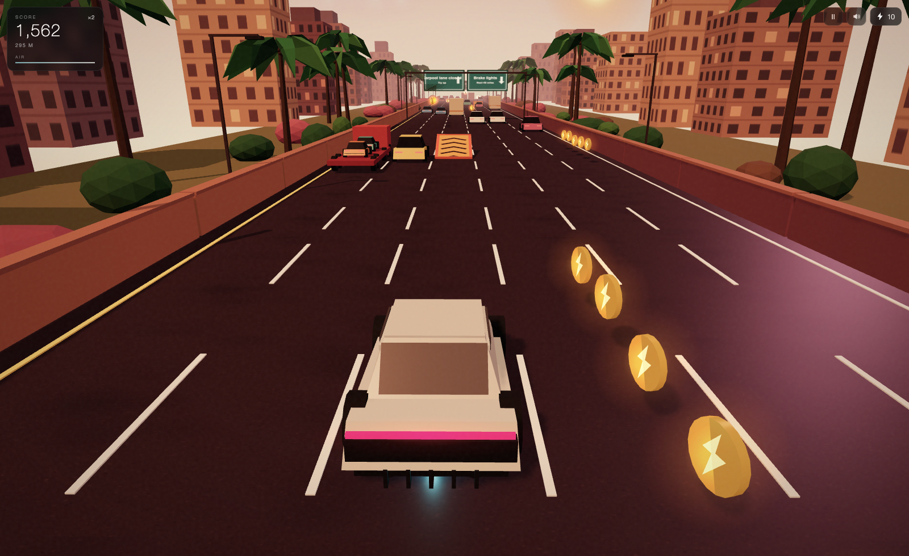

SB—22 · Improvement archive
Improvement,
with receipts.
Roadster · Roadster 赛车
Source study
Starting point
The evidence starts with a public reference and ends at the current warm low-poly Roadster Rush implementation. No earlier source or iteration log exists, so this is an implementation walkthrough rather than a fabricated improvement timeline.
Evidence standard: Current implementation details; no earlier version claimed


These are two states of the current implementation, not before/after versions.
Refinement sequence
What changed
4 documented implementation or specification improvements.
- 01
Reuse and bounded resources
Road segments loop, while traffic, coin paths and jumps reuse objects. Particles are capped and materials are released on disposal.
- 02
Repeatable inspection
Seeded randomness, ?demo=1 autopilot, scene presets and a small inspection interface make the current build easier to reproduce and review.
- 03
Complete game state
Lane changes, jumping/flight, rolls, acceleration, collisions, scoring, pause and keyboard/touch input form a playable loop.
- 04
Lightweight presentation
Procedural textures and geometry, shared box geometry, a pixel-ratio ceiling, soft shadows and synthesized audio keep the page self-contained.
Evidence boundary
The Roadster Rush browser implementation is a different visual scene from the archived roadster comparison clip. The original reference is not presented as a model-generated result. No optimization rounds are claimed; these are current implementation details.